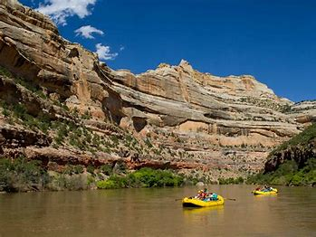
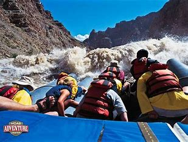
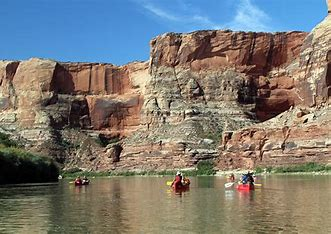

Rivers
Yampa River Colorado
Float through a dinosaur national monument! The Rocky Mountain Sprin run off creates big roaring rapids with an average descent of 12-14 feet per mile. 2,000 ft high white canyon walls with black tiger-stripes; Hike a side canyons to prehistoric rock art and abandoned caves.
Cataract Canyon
Go deep into the Southwest's spectacular desert landscape on this action-packed five-day rafting and hiking adventure, beginning and ending in Moab - Utah's exciting adventure hub. Following expert guides, you'll enjoy impressive access to 94 miles of the Colorado River as it flows through Canyonlands National Park. Experience the red-rock wonder of Cataract Canyon as you tackle the "Big Drops," famed as some of the world's best rapids, and explore remote riverside hiking trails and archaeological sites. Spend nights camping beneath starry skies in an internationally renowned Dark Sky Park! Finish your trip in Lake Powell with a memorable scenic flight retracing your river journey through Canyonlands National Park and back to Moab. Pair this trip with other nearby adventures in Arches, Capitol Reef, Grand Staircase Escalante, and Monument Valley.
Labyrinth Canyon
Gracefully float through the southwestern vistas and red sandstone cliffs with buttes and mesas that rise over 1,500 ft above the river floor. This is a perfect trip for those who want a quiet, relaxing getaway. Labyrinth walls are cut with longside canyons whree guests of all skill levels can explore and ponder ancient American writings and trappers inscriptions.